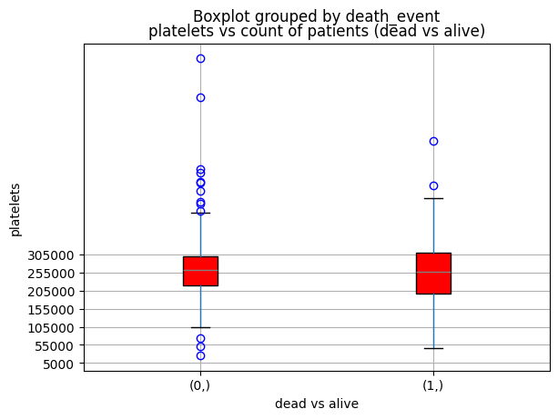
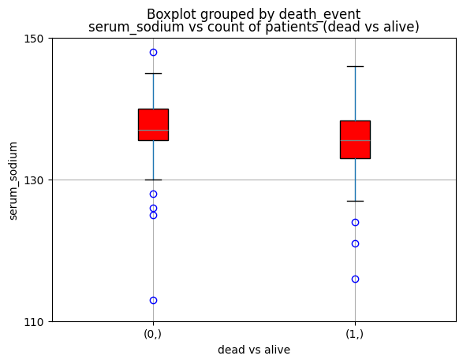
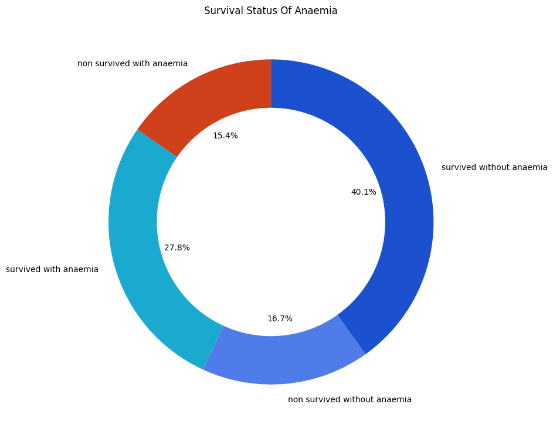
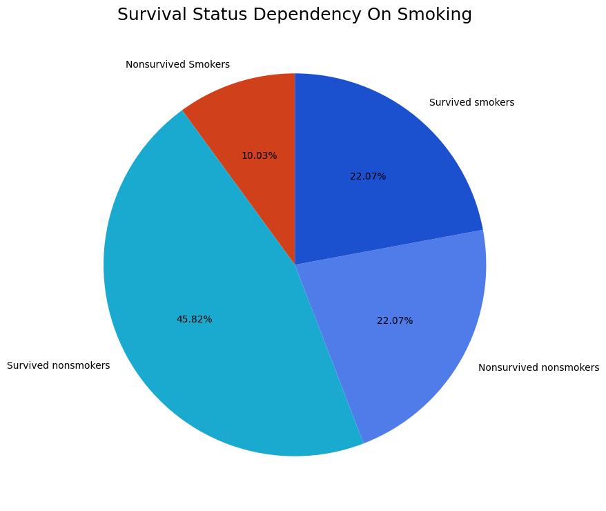
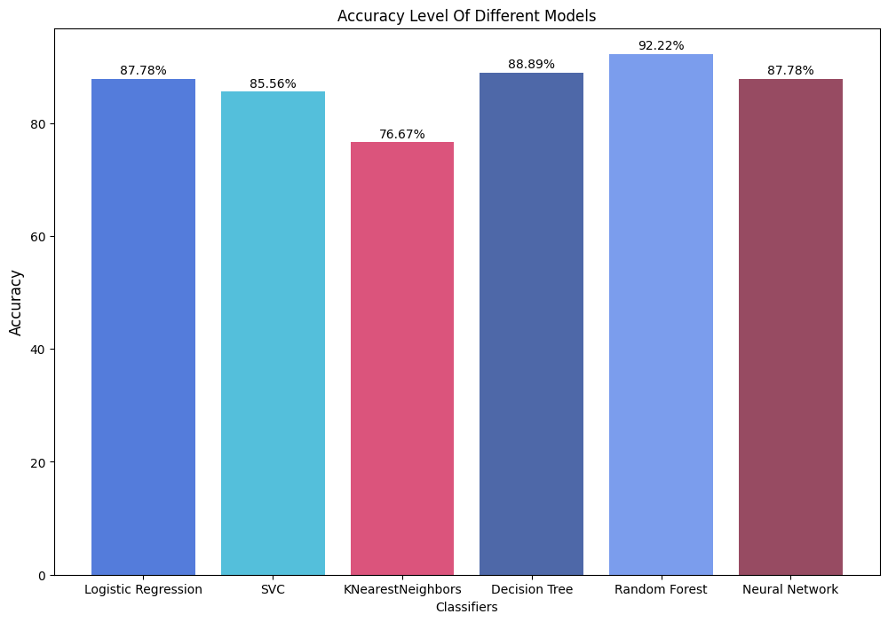

Cardiovascular diseases (CVDs) are the number 1 cause of death globally, taking an estimated 17.9 million lives each year, which accounts for 31% of all deaths worlwide. Heart failure is a common event caused by CVDs and this dataset contains 12 features that can be used to predict mortality by heart failure.
Most cardiovascular diseases can be prevented by addressing behavioural risk factors such as tobacco use, unhealthy diet and obesity, physical inactivity and harmful use of alcohol using population-wide strategies.
People with cardiovascular disease or who are at high cardiovascular risk (due to the presence of one or more risk factors such as hypertension, diabetes, hyperlipidaemia or already established disease) need early detection and management wherein a machine learning model can be of great help.
Indicates decrease of red blood cells or hemoglobin.
Creatinine Phosphokinase
mcg/L
It is an enzyme present in the heart, whose elevated levels in the bloodstream indicate muscle or cardiac damage.
Diabetes
Boolean
It is a chronic medical condition characterized by elevated blood sugar levels resulting from insufficient insulin production or the body’s inability to effectively use insulin.
Ejection Fraction
Percentage
It is a measure of the percentage of blood that the heart’s left ventricle pumps out with each contraction, providing an assessment of the heart’s pumping efficiency; a lower EF may indicate heart dysfunction or failure.
Blood Pressure
Boolean
Blood pressure is the force exerted by circulating blood against the walls of arteries.
Platelets
kiloplatelets/mL
platelets help prevent excessive bleeding by forming blood clots at the site of vascular injury.
Serum Creatinine
mg/dL
Serum creatinine is a waste product generated by muscle metabolism that is filtered out of the blood by the kidneys.
Serum Sodium
mEq/L
Serum sodium refers to the concentration of sodium ions in the liquid component of blood.
Sex
Binary (0 for women, 1 for men)
The sex of the patient.
Smoking
Boolean
If the patient smokes actively or ever did in past.
Time
Time in months
It is the time of the patient’s follow-up visit for the disease in months.
1.3 Packages and Dependencies
Code
# Importing dependenciesimport pandas as pdimport numpy as npimport matplotlib.pyplot as pltimport seaborn as snsimport plotly.express as pximport warningsfrom sklearn.model_selection import train_test_splitfrom sklearn.preprocessing import StandardScalerfrom sklearn.linear_model import LogisticRegressionfrom sklearn.svm import SVCfrom sklearn.neighbors import KNeighborsClassifierfrom sklearn.tree import DecisionTreeClassifierfrom sklearn.naive_bayes import GaussianNBfrom sklearn.ensemble import RandomForestClassifierfrom sklearn.metrics import accuracy_scoreimport tensorflow as tf
#serum_creatinine vs count of patients (dead vs alive)a="blue"b="grey"c="red"# serum_creatinine vs count of patients (dead vs alive)cpk = df_cleaned.groupby("death_event")["serum_creatinine"]cpk#plotting the boxplotdf_cleaned.boxplot(column=["serum_creatinine"], by=["death_event"], patch_artist=True, boxprops=dict(facecolor=c), flierprops=dict(color=a, markeredgecolor=a), medianprops=dict(color=b))plt.title('serum_creatinine vs count of patients (dead vs survivors)')plt.xlabel('dead vs alive')plt.ylabel('serum_creatinine')y_ticks = np.arange(0.5, 5, 1)plt.yticks(y_ticks)plt.savefig(fname ="./Images/Figure2.png")plt.show()
Code
# platelets vs count of patients (dead vs alive)a="blue"b="grey"c="red"# platelets vs count of patients (dead vs alive)cpk = df_cleaned.groupby("death_event")["platelets"]cpk#plotting the boxplotdf_cleaned.boxplot(column=["platelets"], by=["death_event"], patch_artist=True, boxprops=dict(facecolor=c), flierprops=dict(color=a, markeredgecolor=a), medianprops=dict(color=b))plt.title('platelets vs count of patients (dead vs alive)')plt.xlabel('dead vs alive')plt.ylabel('platelets')y_ticks = np.arange(5000, 350000, 50000)plt.yticks(y_ticks)plt.savefig(fname ="./Images/Figure3.png",)plt.show()

Code
# creatinine_phosphokinase vs count of patients (dead vs alive)a="blue"b="grey"c="red"# creatinine_phosphokinase vs count of patients (dead vs alive)cpk = df_cleaned.groupby("death_event")["creatinine_phosphokinase"]cpk#plotting the boxplotdf_cleaned.boxplot(column=["creatinine_phosphokinase"], by=["death_event"], patch_artist=True, boxprops=dict(facecolor=c), flierprops=dict(color=a, markeredgecolor=a), medianprops=dict(color=b))plt.title('creatinine_phosphokinase vs count of patients (dead vs alive)')plt.xlabel('dead vs alive')plt.ylabel('creatinine_phosphokinase')y_ticks = np.arange(10, 2000, 400)plt.yticks(y_ticks)plt.savefig(fname ="./Images/Figure4.png")plt.show()
Code
#serum_sodium vs count of patients (dead vs alive)a="blue"b="grey"c="red"# serum_sodium vs count of patients (dead vs alive)cpk = df_cleaned.groupby("death_event")["serum_sodium"]cpk#plotting the boxplotdf_cleaned.boxplot(column=["serum_sodium"], by=["death_event"], patch_artist=True, boxprops=dict(facecolor=c), flierprops=dict(color=a, markeredgecolor=a), medianprops=dict(color=b))plt.title('serum_sodium vs count of patients (dead vs alive)')plt.xlabel('dead vs alive')plt.ylabel('serum_sodium')y_ticks = np.arange(110, 160, 20)plt.yticks(y_ticks)plt.savefig(fname ="./Images/Figure5.png")plt.show()

Code
#Count of patients (dead vs alive) with Agedf1=df_cleaned[df_cleaned["death_event"] ==0]df1_age_counts=df1["age"].value_counts()df1_sorted=df1_age_counts.sort_index()df2=df_cleaned[df_cleaned["death_event"] ==1]df2_age_counts=df2["age"].value_counts()df2_sorted=df2_age_counts.sort_index()plt.plot(df1_sorted, label ='alive')plt.plot(df2_sorted, label ='dead')plt.title('Count of patients (dead vs alive) with Age')plt.xlabel("Age")plt.ylabel("Count of patients")plt.legend(loc="upper left")plt.savefig("./Images/Figure6.png")plt.show()
Code
# Survival status on Anaemiawith_anaemia = df_cleaned[df_cleaned["anaemia"]==1]without_anaemia = df_cleaned[df_cleaned["anaemia"]==0]non_survived_with_anaemia = with_anaemia[with_anaemia["death_event"]==1]survived_with_anaemia = with_anaemia[with_anaemia["death_event"]==0]non_survived_without_anaemia = without_anaemia[without_anaemia["death_event"]==1]survived_without_anaemia = without_anaemia[without_anaemia["death_event"]==0]# Specify colors for each categorycolors = ['#CF401B', '#1BAACF', '#4F7CE8', '#1B50CF']anaemia_data = [len(non_survived_with_anaemia), len(survived_with_anaemia), len(non_survived_without_anaemia), \len(survived_without_anaemia)]anaemia_labels = ["non survived with anaemia","survived with anaemia","non survived without anaemia",\"survived without anaemia"]plt.figure(figsize=(9,9))plt.pie(anaemia_data, labels = anaemia_labels, autopct='%.1f%%', startangle=90, colors = colors)circle = plt.Circle((0,0), 0.7, color="white")p = plt.gcf()p.gca().add_artist(circle)plt.title("Survival Status Of Anaemia", fontsize=12)plt.savefig(fname ="./Images/Figure7.png")plt.show()

Code
# Smokers Analysissmokers = df_cleaned[df_cleaned["smoking"]==1]non_smokers = df_cleaned[df_cleaned["smoking"]==0]survived_smokers = smokers[smokers["death_event"]==0]survived_nonsmokers = non_smokers[non_smokers["death_event"]==0]nonsurvived_smokers = smokers[smokers["death_event"]==1]nonsurvived_nonsmokers = non_smokers[non_smokers["death_event"]==1]# Specify colors for each categorycolors = ['#cf401b', '#1baacf', '#4f7ce8', '#1B50CF']# Count data for the pie chartsmoking_data = [len(nonsurvived_smokers), len(survived_nonsmokers), len(nonsurvived_nonsmokers), len(survived_smokers)]smoking_labels = ["Nonsurvived Smokers", "Survived nonsmokers", "Nonsurvived nonsmokers", "Survived smokers"]plt.figure(figsize=(9, 9))# Specify colors for each sliceplt.pie(smoking_data, labels=smoking_labels, autopct='%.2f%%', startangle=90, colors=colors)plt.title("Survival Status Dependency On Smoking", fontsize=18)plt.savefig(fname ="./Images/Figure8.png")plt.show()

3.3 Bivariant Analysis
Code
# Creating a scatter plot of serum creatinine levels by AgeFigure3, Axes3 = plt.subplots()Axes3.scatter(df_cleaned[df_cleaned["death_event"] ==1]["age"], df_cleaned[df_cleaned["death_event"] ==1]["serum_creatinine"], s =55, c = red, alpha =.5, label ="Death")Axes3.scatter(df_cleaned[df_cleaned["death_event"] ==0]["age"], df_cleaned[df_cleaned["death_event"] ==0]["serum_creatinine"], s =55, c = blue, alpha =.5, label ="No Death")Axes3.axhline(y =0.59, color ="black", alpha =.7, linestyle ="dashed") Axes3.axhline(y =1.35, color ="black", alpha =.7, linestyle ="dashed")# Theme for plot Axes3.set_facecolor(light_gray_1)Axes3.spines["top"].set_visible(False)Axes3.spines["right"].set_visible(False)Axes3.yaxis.set_tick_params(labelsize =10)Axes3.xaxis.set_tick_params(labelsize =10)# Title and labelsplt.title(label ="Levels of Serum Creatinine by Age", loc ="center", fontsize =16)plt.ylabel(ylabel ="Serum Creatinine (mg/L)", fontsize =12)plt.xlabel(xlabel ="Age", fontsize =12)plt.grid()plt.legend()plt.savefig(fname ="./Images/Figure9.png")plt.show()
# Calculating male smoker death events and survivorsmale_smoker_death= ((df_cleaned["death_event"] ==1) & (df_cleaned["sex"] ==1) & (df_cleaned["smoking"] ==1)).sum()male_smoker_survivors = ((df_cleaned["death_event"] ==0) & (df_cleaned["sex"] ==1) & (df_cleaned["smoking"] ==1)).sum()# Calculating female smoker death events and survivorsfemale_smoker_death = ((df_cleaned["death_event"] ==1) & (df_cleaned["sex"] ==0) & (df_cleaned["smoking"] ==1)).sum()female_smoker_survivors = ((df_cleaned["death_event"] ==0) & (df_cleaned["sex"] ==0) & (df_cleaned["smoking"] ==1)).sum()# Creating a DataFrame to display the resultssmoker_df = pd.DataFrame({'Male_Smoker_Death': [male_smoker_death],'Female_Smoker_Death': [female_smoker_death],'Male_Smoker_Survivors': [male_smoker_survivors],'Female_Smoker_Survivors': [female_smoker_survivors]})smoker_df
Male_Smoker_Death
Female_Smoker_Death
Male_Smoker_Survivors
Female_Smoker_Survivors
0
27
3
65
1
Code
# Multi variant analysis for patients who have diabetes as well as high blood pressurediabetes_high_bp_deaths= ((df_cleaned["death_event"] ==1) & (df_cleaned["diabetes"] ==1) & (df_cleaned["high_blood_pressure"] ==1)).sum()diabetes_high_bp_survivors= ((df_cleaned["death_event"] ==0) & (df_cleaned["diabetes"] ==1) & (df_cleaned["high_blood_pressure"] ==1)).sum()diabetes_high_bp_df = pd.DataFrame({'Diabetes_High_BP_Deaths': [diabetes_high_bp_deaths],'Diabetes_High_BP_Survivors': [diabetes_high_bp_survivors] })diabetes_high_bp_df
Diabetes_High_BP_Deaths
Diabetes_High_BP_Survivors
0
17
26
Code
# ploting donut chart for diabetes_high_bp_df deaths = diabetes_high_bp_df['Diabetes_High_BP_Deaths']survivors = diabetes_high_bp_df['Diabetes_High_BP_Survivors']# Create a donut chartfig, ax = plt.subplots(figsize=(8, 8))ax.pie([deaths.sum(), survivors.sum()], labels=['Deaths', 'Survivors'], autopct='%1.1f%%', explode=[0.05, 0.0], startangle=90, wedgeprops=dict(width=0.3), colors=['#1B50CF', '#1baacf'])# Draw a circle in the center to create a donut chartcentre_circle = plt.Circle((0,0),0.70,fc='white')fig = plt.gcf()fig.gca().add_artist(centre_circle)# Equal aspect ratio ensures that the pie is drawn as a circle.ax.axis('equal') plt.title('Diabetes and High Blood Pressure Counts for Deaths and Survivors',fontsize=12)plt.savefig(fname ="./Images/Figure11.png")plt.show()
4 Data Modeling & Predictions
Code
# # Create a copy of the cleaned DataFrameX=df_cleaned.copy()# Remove the "death_event" column from the features (X)X.drop("death_event", axis =1, inplace =True)## Setting the "death_event" column as the target variable (y)y=df_cleaned["death_event"]
Code
X.head()
age
anaemia
creatinine_phosphokinase
diabetes
ejection_fraction
high_blood_pressure
platelets
serum_creatinine
serum_sodium
sex
smoking
time
0
75.0
0
582
0
20
1
265000.00
1.9
130
1
0
4
1
55.0
0
7861
0
38
0
263358.03
1.1
136
1
0
6
2
65.0
0
146
0
20
0
162000.00
1.3
129
1
1
7
3
50.0
1
111
0
20
0
210000.00
1.9
137
1
0
7
4
65.0
1
160
1
20
0
327000.00
2.7
116
0
0
8
Code
# # Reshape the target variable (y) to have a single column using the reshape functiony= y.values.reshape(-1,1)
Code
# # Display the first five elements of the reshaped target variable (y)y[:5]
array([[1],
[1],
[1],
[1],
[1]])
Code
# Splitting the dataX_train, X_test, y_train, y_test=train_test_split(X, y, test_size=0.3, random_state =2)
Code
len(X_train)
209
Code
# Data Scalingscaler = StandardScaler()x_train_scaled = scaler.fit_transform(X_train)x_test_scaled = scaler.transform(X_test)
Code
# Accuracy List to store all the accuracy for later comparisonaccuracy_list=[]
# Create a KNeighborsClassifier model with 6 neighborsknn_model = KNeighborsClassifier(n_neighbors=6)# Train the KNeighbors model using the scaled training dataknn_model.fit(x_train_scaled, y_train)# Make predictions on the scaled test dataknn_prediction = knn_model.predict(x_test_scaled)# Calculate the accuracy of the KNeighbors modelknn_accuracy =round(accuracy_score(knn_prediction, y_test), 4) *100# Append the accuracy to the accuracy_list for tracking multiple model performancesaccuracy_list.append(knn_accuracy)# Display the accuracy of the KNeighbors modelprint(f"KNeighbors model accuracy: {knn_accuracy}%")
# Evaluate the model using the test datamodel_loss, model_accuracy = nn_model.evaluate(x_test_scaled,y_test,verbose=2)print(f"Loss: {model_loss}, Accuracy: {model_accuracy}")
# Check the lengths of models and accuracy_listprint(len(models), len(accuracy_list))
6 6
Code
# Set up the figure size for the bar chartplt.figure(figsize=(12,8))# Create a bar chart using the specified models and corresponding accuracy valuesax = plt.bar(models, accuracy_list, color=["#1B50CF", "#1baacf","#cf1b50", "#12368b", "#4f7ce8", "#740f2d"], alpha=0.75)plt.xlabel("Classifiers", fontsize =10)plt.ylabel("Accuracy", fontsize =12)plt.title("Accuracy Level Of Different Models", fontsize=12)# Annotate each bar with its corresponding accuracy valuefor p in ax.patches: width = p.get_width() height = p.get_height() x = p.get_x() y = p.get_y() plt.annotate(f"{height}%", (x+width/2, y+ height*1.01), ha="center")plt.savefig(fname ="./Images/Figure12.png")plt.show()

6 Acknowledgements
Citation
Davide Chicco, Giuseppe Jurman: Machine learning can predict survival of patients with heart failure from serum creatinine and ejection fraction alone. BMC Medical Informatics and Decision Making 20, 16 (2020). (link)